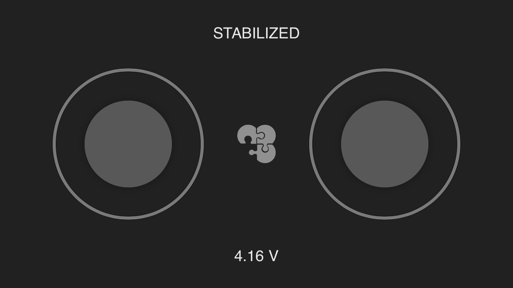

Controlling Clever from a smartphone

To control Clever from a smartphone via Wi-Fi, you have to install the appropriate application – iOS, Android (https://play.google.com/store/apps/details?id=express.copter.cleverrc).

The mobile transmitter is mainly intended for indoor flights to the range not exceeding 10-15 m. Many Wi-Fi networks may also impair responsiveness and the range of the transmitter.
Control from a smartphone is also available in the mobile version of the app QGroundControl.
Configuring
An open QGroundControl or rviz connection sends large amounts of data over Wi-Fi, which can adversely affect responsiveness of the mobile transmitter. It is recommended not to use these applications together with it.
Install Clever image on RPi. For running the application, settings rosbridge and rc in the launch file (~/catkin_ws/src/clever/clever/launch/clever.launch) should be enabled:
<arg name="rosbridge" default="true"/>
<arg name="rc" default="true"/>
After the launch-file is edited, restart package clever:
sudo systemctl restart clever
Also make sure that PX4-parameter COM_RC_IN_MODE is set to 0 (RC Transmitter).
Additional PX4 parameters:
COM_RC_LOSS_T– timeout for detecting signal loss by the transmitter (mobile or physical). It is recommended to increase the timeout to several seconds.NAV_RCL_ACT– action upon loss of transmitter signal.
The mobile transmitter conflicts with the real radio control equipment. When the mobile transmitter is used, it should be powered off.
Connection
Connect the smartphone to Clever Wi-Fi network (CLEVER-xxxx). The application should connect to the copter automatically. Upon successful connection, the current mode and the battery charge level should be displayed.
The sticks on the screen of the application work just like real sticks. To arm the copter, hold the left stick in the bottom right corner for several seconds. To disarm — in the bottom left corner.
Malfunctions
If the interface of the transmitter displays a surely incorrect voltage (e.g., > 5 V), check that the value of PX4 parameter
BAT_N_CELLSmatches the actual number of battery cells. If the displayed voltage is still incorrect, calibrate the battery (TODO: link).If instead of mode PX4, text "DISCONNECTED FROM FCU" is displayed, check Raspberry Pi connection to Pixhawk.